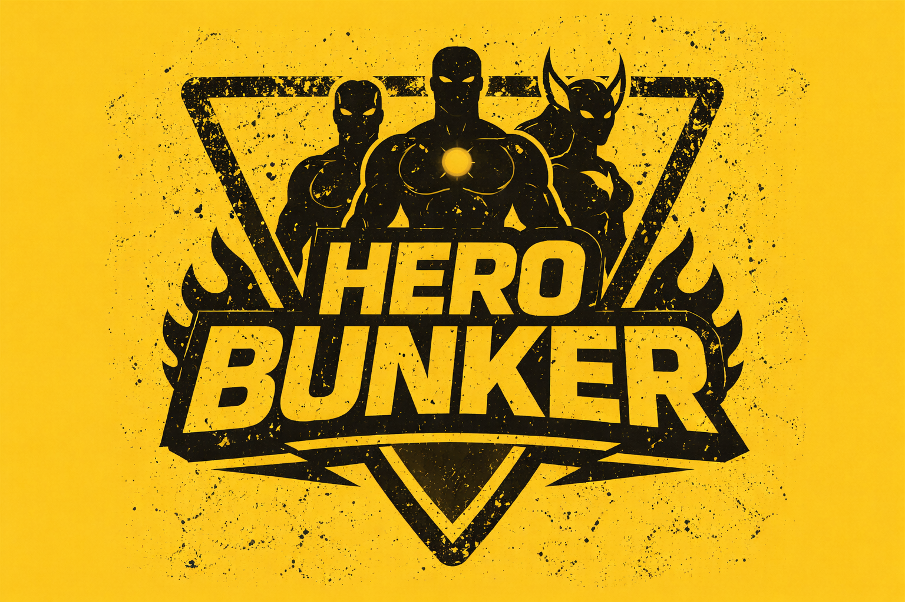
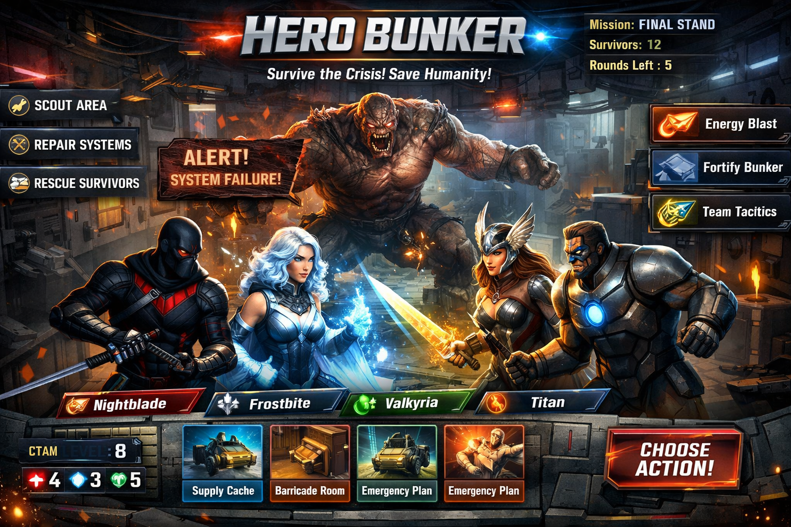

A Role-Playing Superhero Strategy Game Inspired by Bunker
Hero Bunker is a digital role-playing superhero game inspired by the strategy board game Bunker. Players take on the roles of superheroes trapped in a crisis situation and must use strategy, teamwork, and decision-making to survive and save humanity.
Each player receives unique abilities, secret information, and mission objectives. The team must decide who can be trusted and which heroes are best suited to survive the disaster.
Many modern games focus on fast reactions and repetitive gameplay. Our project focuses on communication, strategy, and role-playing. It encourages players to think critically, cooperate with others, and make difficult decisions under pressure.
By turning the original board game idea into a digital experience, we make the game easier to access and more interactive for modern players.
Players who enjoy thinking ahead, planning strategies, and solving complex problems.
People who enjoy superhero stories, powers, and dramatic mission scenarios.
The game is designed for groups of players who want a fun and interactive experience.
Each player selects a superhero with unique abilities and background.
Players receive hidden characteristics and roles that influence the game.
The team debates who should survive in the bunker based on their abilities.
Players attempt to solve challenges and survive the disaster.
Supporting this project helps us develop a unique digital board game that combines role-playing, storytelling, and strategic thinking.
Help us bring Hero Bunker to life!

Role: Programmer
Responsible for coding the website and implementing game logic.
Role: Designer
Responsible for UI design, graphics, and visual identity and idea.